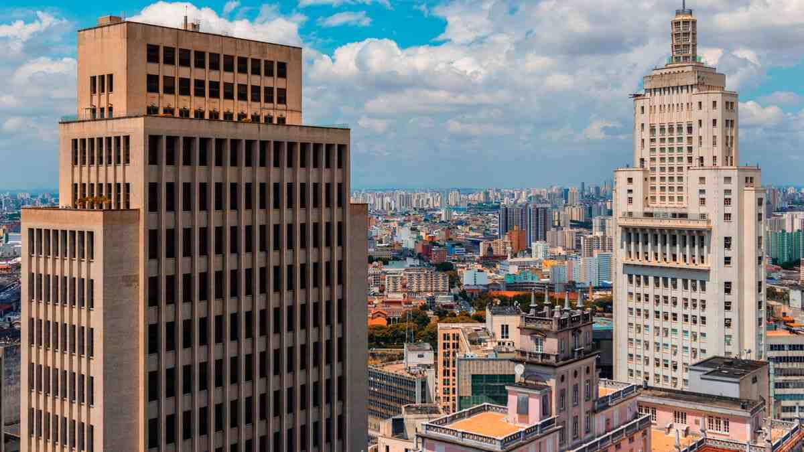

Santo André, localizada na região do ABC Paulista, é um município que combina tradição industrial, desenvolvimento urbano e qualidade de vida. Fundada no século XVI, a cidade se destacou a partir do século XX com a chegada da indústria automobilística e metalúrgica, atraindo imigrantes e moldando sua identidade cultural.
O município investe em inovação, mobilidade e sustentabilidade, oferecendo serviços públicos modernos e espaços de convivência bem planejados. Parques, centros culturais e eventos comunitários reforçam a vida urbana e o bem-estar da população, tornando Santo André uma referência em planejamento e infraestrutura regional.
Além do crescimento econômico, Santo André valoriza o lazer, a educação e a cultura. Museus, teatros, áreas verdes e atividades esportivas estão distribuídos por toda a cidade, oferecendo opções para moradores e turistas, além de preservar a memória e a história do município.
• Parque Celso Daniel – Área de lazer ampla, com trilhas, playgrounds e eventos culturais.
• Sabina Escola Parque do Conhecimento – Espaço interativo de ciência, com planetário e aquário.
• Parque Natural Municipal do Pedroso – Área de preservação ambiental com trilhas e contato com a natureza.
• Igreja Matriz de Santo André – Marco histórico e religioso da cidade.
• Centro Cultural Santo André – Local para exposições, shows e eventos culturais variados.

Retorne a Página Anterior